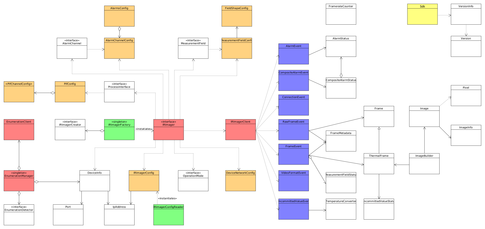

|
Thermal Camera SDK 11.4.10
SDK for Optris Thermal Cameras
|
|
Thermal Camera SDK 11.4.10
SDK for Optris Thermal Cameras
|
The following UML diagram illustrates the class structure of the public SDK API. All the details about the class members as well as some minor helper classes are omitted to ensure it is clear and easy to understand.

A number of design patterns are employed to make the API easy to use. They include but are not limited to
Observers (red)
The SDK features two Observer structures. The most important one is constituted by the IRImager interface and the IRImagerClient. Each IRImager instance represents a single thermal camera and its interface defines how you can interact with it. By registering a child class of the IRImagerClient with the addClient() method you can receive processed thermal frames, flag states and other status information. To process this data implement the corresponding callback methods defined by the IRImagerClient in your child class.
The EnumerationManger uses the same pattern to inform EnumerationClient classes of newly detected or removed devices or devices that changed their busy status.
Both client classes feature empty default implementations for the callbacks they define. Therefore, you only need to override the callbacks that you need.
IRImagerClient or EnumerationClient instance from the IRImager or EnumerationManager with removeClient() before destroying it. Otherwise you may provoke a segmentation fault.Factories (green)
Factories encapsulate the instantiation of classes. The public API features two such factories: The first one is the IRImagerFactory that creates objects of classes that implement the IRImager interface based on a provided string. By requesting a native instance you get an IRImager implementation that can interact with thermal cameras via USB and Ethernet.
The second factory loads a configuration file from the given path and returns an IRImagerConfig object with the read configuration values.
Singletons
Both the IRImagerFactory and the EnumerationManager are Singletons. This means there can only be one object per class and per application. To access this object you have to call the static method getInstance().
Static Classes (yellow)
Apart from the design patterns there is another important class: the static Sdk class. It contains the init() method required to initialize the SDK, methods to manipulate some SDK wide behavior and access to VersionInfo objects holding version and build information.
Additionally, it allows you to set application/process wide settings that affect, for example, calibration file acquisition or color palette loading.
Event Classes (blue)
All the information provided by the IRImagerClient callbacks are encapsulated in event classes. They feature public fields through which clients can access the data they desire. In the case of the ConnectionEvent clients can even send back data to the SDK to influence the automatic calibration file acquisition.
Configuration Classes (orange)
They are simple plain data classes that feature only public member variables. They can also have a static validate() method for verifying the configuration settings they hold.
As illustrated in the previous section, the SDK uses an Observer pattern to relay the latest frame data to a client. This primarily happens via the following method of the IRImagerClient class (C++):
This callback is triggered whenever the SDK finished processing a frame. This occurs at maximum at the device framerate of the currently used video format (see Supported Cameras section for more details). This rate can be reduced by setting a sub-sampled framerate via the configuration file or the IRImager interface.
The callback provides a reference to a FrameEvent object that contains all the results of the processing pipeline:
thermalFrame is a ThermalFrame object that holds the thermal data of the overall frame.meta is a FrameMetadata object which provides the corresponding meta data.fields is a map containing the MeasurementFieldStatus for each active measurement field.thermalFrame object will be empty. Likewise will be the fields map, if the fields are deactivated. Refer to the configuration file documentation or the API documentation of the ProcessingOutputConfig for more details.There are a few important things to note when implementing the onFrame() callback:
The method only provides a reference (&) to the FrameEvent object. It refers to an internal buffer that will be reused by the SDK once the callback is finished. Thus, if you wish to use the event outside of the callback you will have to make an explicit copy with a simple assignment (C++) or with its clone() method (any other language).
IRImager interface.The same points hold true for the onRawFrame() callback verbatim. This callback, however, is deactivated by default by the ProcessingOutputConfig.
onFrame() and onRawFrame() callbacks will lead to frame drops.IRImagerClient have similar properties: They provide references to an internal buffers and sluggish callback implementations will slow down event processing but they will not lead to dropped frames.The ThermalFrame object contains the measured temperatures for each pixel in an internal format. These values are represented by unsigned 16 bit integers. You can convert the internal values into degree Celsius with the help of an TemperatureConverter object. Retrieve it for every ThermalFrame with the getConverter() method.
TemperatureConverter objects that you instantiated yourself but retrieve them from every ThermalFrame you process. This is necessary because the internal values differ depending which TemperaturePrecision is currently active.You have multiple ways to access the thermal data that is internally stored in a one-dimensional row-major array:
getValue() methods to access the internal temperature values for individual pixels.getTemperature() methods to access the temperature in degree Celsius for individual pixels.These methods are convenient but do not offer the best performance since they do range checks. The most efficient ways to access the thermal data are:
C++
Use the getData() method to acquire a const pointer to the internal temperature value of the first pixel. All the values are stored in one continuous section of the memory like they would in a standard C array. As an alternative, you can use the copyDataTo() method.
The temperatures in degree Celsius can be acquired with the copyTemperaturesTo() in the same way.
C#
Use the copyDataTo() method to copy the internal temperature values to a ushort[] array. Make sure it has at least the size returned by the getSize() method.
The temperatures in degree Celsius can also be copied to a float[] array via the copyTemperaturesTo() method. This array should at least have the size returned by getSize().
Python 3
Use the copyDataTo() method to copy the internal temperature values to a two-dimensional NumPy array with the shape (getWidth(), getHeight()) and the data type uint16.
The temperatures in degree Celsius can also be copied to a two-dimensional NumPy array via the copyTemperaturesTo() method. This array should have the shape (getWidth(), getHeight()) and the data type float32.
You can easily convert a ThermalFrame into a false color image with the help of an ImageBuilder object. The resulting images have three channels: red, blue and green (plus an alpha channel with the BGRA format). Each channel has a color depth of 8 bits. The color values are stored in a continuous one-dimensional row-major array. When setting up the ImageBuilder there are few things to consider:
The ColorFormat defines the sequence in which the individual color values for each pixel are stored in the image array. If set to RGB, the value for red will have the lowest index and the value for blue will have the highest. With BGR things are the other way around. The BGRA format stores four bytes per pixel in the sequence blue, green, red, alpha with the alpha value always set to 255 (fully opaque). This matches the memory layout of common 32-bit framebuffer formats, so the resulting image can be uploaded to such targets without a per-pixel conversion.
RGB and BGR this way.WidthAlignment specifies whether the size of each row/line in the resulting image should adhere to a specific alignment. For example the FourBytes alignment ensures that the size of every row/line in bytes is a multiple of four. If this is not the case out of the box, padding bytes will be added at the end of each line. Some libraries depend on a certain alignment to efficiently read image data."Iron", "Rainbow") and are loaded from CSV files at runtime. The SDK also feature a hardcode version of the Iron palette that is used, if no palette files were found. The palette files are loaded during the call of Sdk::init(). For more information on how reload, manage or create your own palettes refer to the color palettes chapter.TemperatureScalingMode specifies how the palette is mapped onto the temperature spectrum found in a ThermalFrame.Once the ImageBuilder object is set up you can set the ThermalFrame to convert with the setThermalFrame() method. Trigger the conversion with convertTemperatureToPaletteImage() and access the result with getImage(). The image data is encapsulated in an Image object.
getImage() method returns only a reference to the Image object that grants read access. If you want to retain a copy in languages other than C++, use the clone() method to force an explicit copy. Keep in mind that you can not manipulate the referenced Image object even if the API of the bindings may suggest it.ImageBuilder write the false color image to a buffer you provide. Refer to the API documentation of the corresponding convertTemperatureToPaletteImage() method for more details.You can access the individual pixels by using the getPixel() methods. They return a Pixel object containing the color values. This is convenient because you do not need to worry about the order of the color values and potential padding bytes. However, this and the included range checking introduces overhead. Therefore, the SDK provides more efficient ways to access the image data:
C++
Use the getData() method to acquire a const pointer to the color value array. All the values are stored in one continuous section of the memory like they would in a standard C array. As an alternative, you can use the copyDataTo() method. The following example uses the shortcut methods provided by the ImageBuilder class.
C#
Use the copyDataTo() method to copy the color values to a byte[] array. Make sure it has at least the size returned by the getSizeInBytes() method. The following listing utilizes the shortcut methods offered by the ImageBuilder class.
Python 3
Use the copyDataTo() method to copy the color values to a three-dimensional NumPy array with the shape (getWidth(), getHeight(), 3) and the data type uint8. The example code below makes use of the shortcut methods of the ImageBuilder class.
ImageBuilder offers the shortcut methods copyImageDataTo() and getImageSizeInBytes() that allow you direct access the data of the Image object.